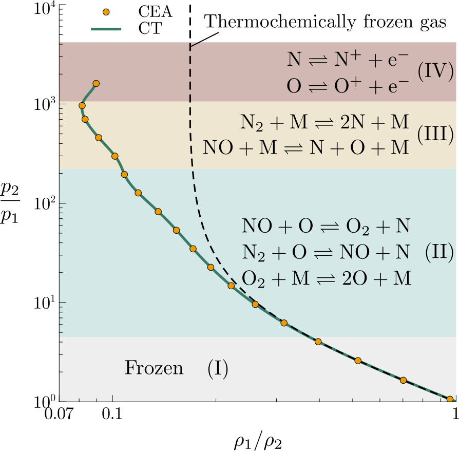
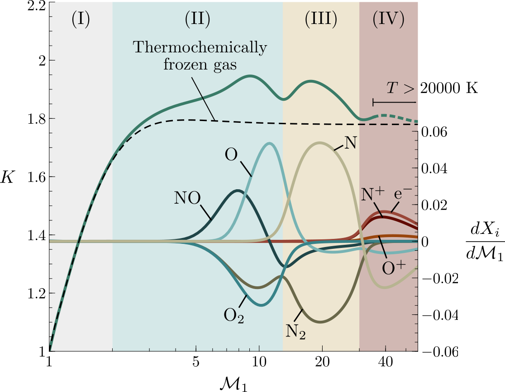

Theory of turbulence augmentation across hypersonic shock waves in air
Alberto Cuadra, César Huete & Marcos Vera
acuadra@ing.uc3m.es
Grupo de Mecánica de Fluidos, Universidad Carlos III de Madrid, 28911 Leganés, Spain
Introduction
When shock waves appear in hypersonic conditions, the intense compression of the gas leads to high temperatures that can activate complex thermochemical phenomena (vibrational excitation, dissociation, electronic excitation, and ionization). The interaction of hypersonic shocks with turbulence in air is addressed in this work using Linear Interaction Analysis (LIA) in combination with an in-house thermochemical code, hearafter Combustion Toolbox (Cuadra, Huete, and Vera 2022).

Figure 1: Sketch of the model problem: a normal shock wave interacts with a hypersonic free stream of weak isotropic turbulence (velocities are shown in the shock reference frame).
Consider first the problem of an undisturbed, normal shock wave in a cold, inviscid, irrotational, air stream (see Fig. 1). The pre-shock density, pressure, flow velocity, and enthalpy in the reference frame of the shock are denoted, respectively, as \(\rho_1\), \(p_1\), \(u_1\), \(h_1\). The corresponding flow variables in the post-shock gas are denoted as \(\rho_2\), \(p_2\), \(u_2\), and \(h_2\). The RH relations are \[\begin{align} p_2/p_1 &= 1 - \rho_1 u_1^2/p_1 \left(\rho_1/\rho_2 - 1\right), \tag{1a}\\ h_2 &= h_1 + u_2^2/2\left[1- \left(\rho_1/\rho_2\right)^2\right]. \tag{1b} \end{align}\] These equations are supplemented with the ideal-gas equations of state (EoS) \(p =\rho R_{g} T\), where \(R_g\) is the gas constant of the gas mixture, and the corresponding function of state for enthalpy, which depends on temperature and the mixture properties. In our case, \(h\) is mode-lled with use made of the NASA-9 coefficient polynomials database, which ranges up to 20000 K (McBride 2002). Combustion Toolbox imple-ments this database and is used to solve the RH relations together with the chosen EoS to give the jump conditions across the shock for the given free stream conditions and shock intensity (see Fig. 2).
Methodology
- Compute the Rankine-Hugoniot (RH) curve and the shocked gas properties with
Combustion Toolbox. - Use normal-mode analysis to describe the interaction with single-frequency vorticity disturbances.
- Compute the interaction with an isotro-pic spectrum providing the value of \(K\) as a integral formula.
Assumptions as in the standard LIA.
Thermochemical effects requires that the characteristic size of the shock wrinkles \(\ell\) be much larger than the thickness of the ther-mochemical non-equilibrium region behind the shock \(\ell_T\), as depicted in Fig. 1.
The Turbulent Kinetic Energy (TKE) ampli-fication factor across the shock wave is a magnitude of utmost interest in the interaction of shock waves with turbulence. It is defined as \[\begin{equation} K = \displaystyle\frac{ \langle {u'}_2^2 \rangle + \langle {v'}_2^2 \rangle + \langle {w'}_2^2 \rangle}{\langle {u'}^2_{1} \rangle + \langle {v'}^2_{1} \rangle + \langle {w'}^2_{1} \rangle}, \tag{2} \end{equation}\] where \(\langle {u'}^2 \rangle\) denotes the mean value of the perturbation kinetic energy associated with velocity component \(u\). By performing the theoretical analysis described in (Huete et al. 2021), with the details omitted here for brevity, the value of \(K\) can be expressed as an integral formula (see Fig. 3).
Results
Owing to endothermic effects (mainly, recombination and dissociation) there is an augmentation of the compression ratio with respect to that of a thermochemical frozen gas as shown in Fig. 2. Results have been compared with NASA’s CEA code (Gordon and McBride 1994), showing excellent agreement.
The non-monotonicity of \(K\) is dictated by the behavior of the vorticity generation across the shock, since acoustic turbulent kinetic energy is negligible in hypersonic conditions.
The slope of the RH curve is found to be associated with the rate of change of the molar fractions with the pre-shock Mach number \(dX_i/d\mathcal{M}_1\) for the most important reactions in the mixture (see inset Fig. 3).
Turbulence intensity and turbulent Reynolds number increase across the shock compared with the thermochemically frozen gas.
Conclusions
The post-shock perturbation flow is govern by two main effects: the mass compression ratio, whose amplification via endothermicity increa-ses the flow deflection and the generation of transverse kinetic energy; and the RH curve slope, which is sensitive to the different inner processes undergoing within the non-equilibrium region. The latter is apparently related with the rate of change of the molar fractions with the pre-shock Mach number for the most important reactions in the mixture.

Figure 2: Log-log RH curve for air at pre-shock temperature \(T_1=300\) K, pressure \(p_1=1\) atm, and volume composition {N\(_2\), O\(_2\), Ar, CO\(_2\)} = {78.08, 20.95, 0.9365, 0.0319} including ionization; green line: Combustion Toolbox (CT) (Cuadra, Huete, and Vera 2022); circles: numerical results obtained with NASA’s Chemical Equilibrium with Applications (CEA) code (Gordon and McBride 1994); Roman numerals: regions with the dominant reactions labeled.

Figure 3: TKE amplification factor \(K\) as a function of the pre-shock Mach number \({\mathcal{M}}_1\) (green line). The dashed line corresponds with the thermochemical frozen gas approximation. The inset represents the rate change of the molar fractions with the pre-shock Mach number \(dX_i/{d\mathcal{M}}_1\) for the most relevant reactions in the mixture.
References
Cuadra, A., C. Huete, and M. Vera. 2022. “Combustion Toolbox: A MATLAB-GUI based open-source tool for solving gaseous combustion problems.” Zenodo. https://doi.org/10.5281/zenodo.6396748.
Gordon, S., and B. J. McBride. 1994. “Computer Program for Calculation of Complex Chemical Equilibrium.” NASA Reference Publication 1311.
Huete, C., A. Cuadra, M. Vera, and J. Urzay. 2021. “Thermochemical Effects on Hypersonic Shock Waves Interacting with Weak Turbulence.” Physics of Fluids 33 (8): 086111.
McBride, B. J. 2002. NASA Glenn Coefficients for Calculating Thermodynamic Properties of Individual Species. NASA, John H. Glenn Research Center.